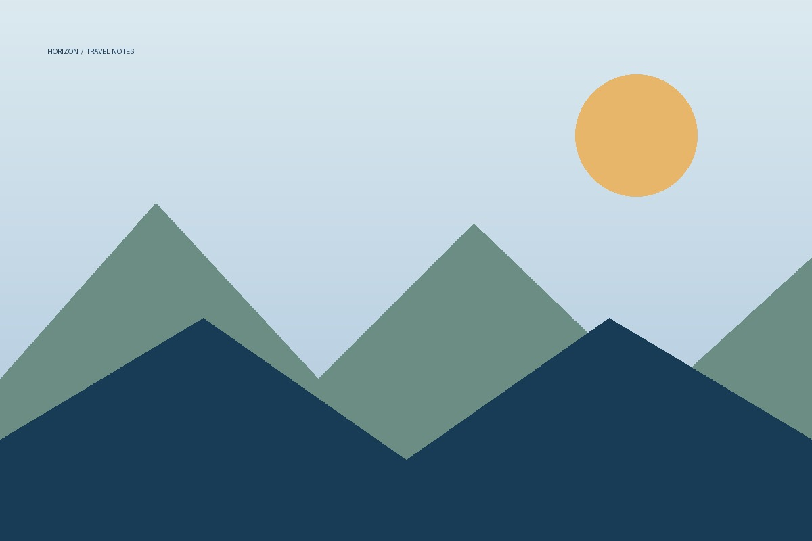

Перед дорогой
Путешествуй
спокойно и легко.
Небольшая подготовка помогает избежать лишней суеты. Сохрани эти простые советы перед следующей поездкой.
01
Проверь документыУточни срок действия паспорта, визовые требования и правила въезда заранее.
02
Собери список вещейУчитывай погоду, длительность поездки и запланированные активности. Не бери лишнего.
03
Продумай бюджетЗаложи расходы на транспорт, жильё, питание и небольшой резерв на непредвиденные ситуации.
04
Сохрани важное офлайнЗагрузи билеты, адрес жилья, карты и копии документов, чтобы они были доступны без интернета.
05
Узнай о местных правилахПочитай о транспорте, культурных особенностях и правилах поведения в выбранной стране.
06
Оставь место спонтанностиНе расписывай каждую минуту. Иногда лучшие открытия случаются без плана.
Маленькая памятка
Хорошая поездка начинается с простого плана.
Составь примерный маршрут, но оставь время на отдых. Так путешествие будет насыщенным, но не утомительным.
Полезные материалы ↗